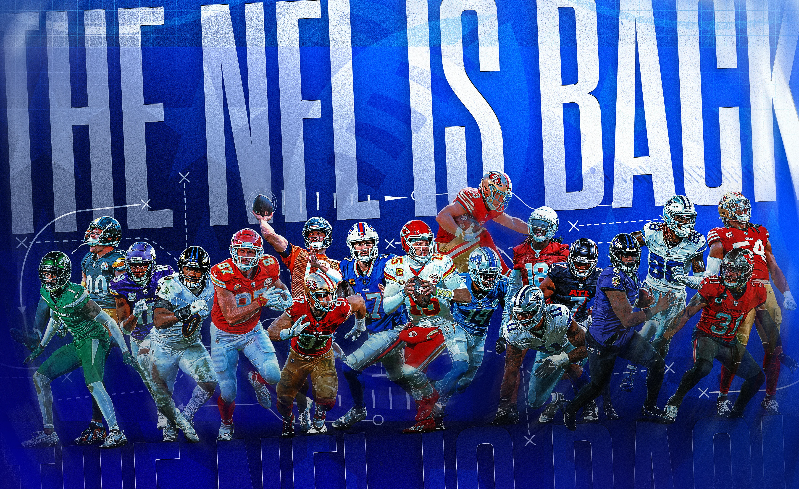
FELLAS! We had another killer draft and great time at the Airbnb. Hope everyone can get out next year. Much love to everyone and the best of luck to everyone this season! I didn’t get a picture, but I randomly took this picture when I had The Departed paused because it pretty much encapsulates us at the draft… Kris Turner, you were a god of a Slutler!
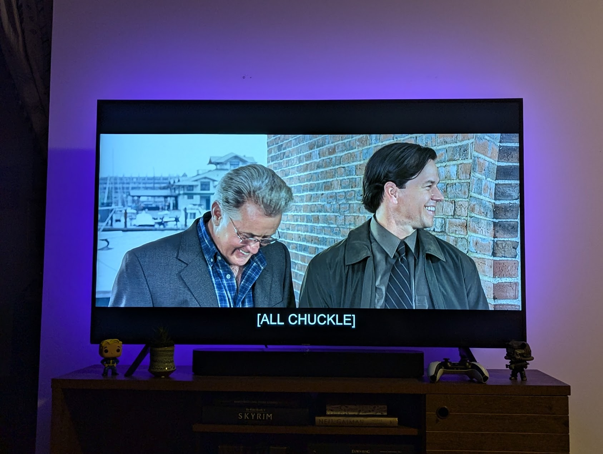
When the league starts, I typically do a matrix, grading QB, RB, WR, TE and FLEX/Bench. This year I’ve given a slight boost to RB and a smaller boost to WR. For QB and TE, a small negative for each. I also gave a small boost based for managers that made the playoffs last year, based on their finish… But, I’m an idiot and none of this matters, lol.
In these rankings, you’ll see my favorite and least favorite picks for each team. This is not my prediction of who will win you the league, it’s just an expression of how I feel about the player and maybe where they were drafted, etc. Vibe check.
But nonetheless, I give you… The Week One Power Rankings!
- Snake 🐍
Draft Grades & Week One Power Rankings
1. Tony -> A+
Last Year’s Preseason Ranking: 3 Raw Score: 35.7 Favorite Picks: Xavier Worthy / DJ Moore Least Favorite: Curtis Samuel
Nothing about this team just blows me away, but I like everything top to bottom. Somehow, this team ended up leaps and bounds ahead of the rest… my positional matrix is bunk, next year I gotta rework it… However…
Hurts is a killer, he ends fantasy opponents dreams. But will the Tush Push continue without Kelce?
Taking shots on some rookies who could bang. Worthy is a wild card. McConkey not far off. And, Benson is destined to start a few games, playing in the same backfield as Conner.
Slot Tucker into the kicker spot, with the boost for the home team fan… not a bad start for my guy. Also, pretty lucky to be drafting from his swanky office and not having to deal with us fucks IRL.
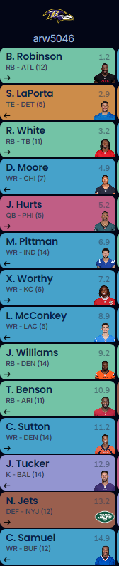
2. Pangy-> B+
Last Year’s Preseason Ranking: 5 Raw Score: 25.6 Favorite Picks: Terry McLaurin / Brock Purdy Least Favorite: Diontae Johnson
This MF phoned it in big time, but to no one’s surprise. Equally to no surprise, his team looks great. I hate some but I love some too.
I’m not a big fan of stacking QBs in our league, but I’ve seen it turn into future assets when both guys are killing it, and it’s easy to see Stroud and Purdy banging early.
I hate the Johnson/Warren picks back to back, though I feel like McLaurin/White right above are going to pay out (fuck the Raiders).
My main concern is the investment on (probably) shitty teams: Washington, Las Vegas, Carolina and I have weird feelings about Pittsburgh (fuck russ) and Atlanta (still).
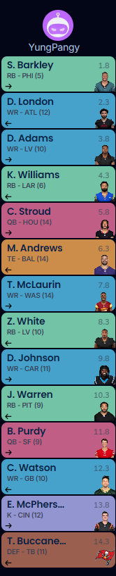
3. Andy -> B
Last Year’s Preseason Ranking: 10 Raw Score: 24.8 Favorite Picks: Mike Evans (keeper) / Josh Jacobs Least Favorite: Marvin Harrison Jr.
I don’t know how he’s this high. CMC is a hell of a drug.
This team looks like Chris Johnson drafted it - old names! Though recently, I think I’m on board with old guys just getting shit done.
I think Marvin Harrison is going to be great. I could see a long stretch of him being drafted right around this spot, but I’m not sure he’s going to be worth where he was taken this year.
Keenan Allen is both: apparently fattest as ever and unguardable still (says Hard Knocks)
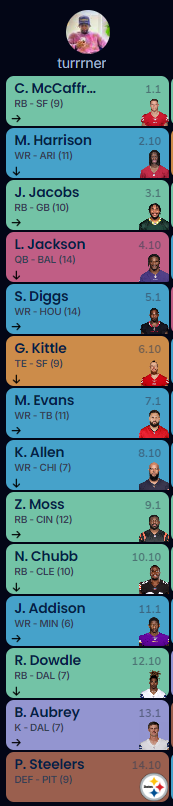
4. Jake -> B
Last Year’s Preseason Ranking: 2 Raw Score: 23.9 Favorite Picks: Cooper Kupp / Deebo Samuel Least Favorite: Austin Ekeler
I think I got the “if they stay healthy, they’ll win the championship” squad. Banking on that with Gibbs (hamstring in camp), Samuel and Kupp (we know), Mostert (one healthy season ever), Richardson… oh my god I just passed out from having to type this whole paragrapppph.kmlsd v
RB depth carries the squad - HMU for trade offers in Week Three.
Quite like the Shakir pickup late, he could be WR1 on the Bills. As always, I think the end of the draft could have gone a little better.
I did also like the last round Hollywood pickup to go straight to the IR spot (for a kicker to be named later).
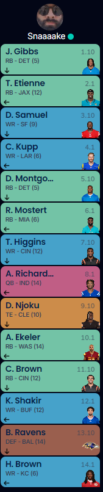
5. Neil -> B
Last Year’s Preseason Ranking: 4 Raw Score: 22.8 Favorite Picks: Nico Collins / Chris Godwin Least Favorite: Najee Harris… Definitely Najee Harris
I think it’s gonna be Nico. We’ll see, but that’s my feeling.
Neil walked away with the best WR ranking. With probably the best WR1/WR2 combo, with likely the best WR3. Back that up with Godwin and Hopkins, he should probably be safe there… unless Rodgers goes down.
He was also near the bottom for my RB rankings. Looking back at the rankings and seeing this draft again, IDK it might be the worst. I see upside for a couple of guys, but depth is a concern.
Love Kincaid as our latest keeper of course (you’re welcome).
The late Burrow stash is nice too. If he’s healthy, that could help fetch an RB later.
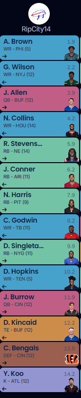
6. CJ-> B-
Last Year’s Preseason Ranking: 9 Raw Score: 22.2 Favorite Picks: De’Von Achane / Jerome Ford Least Favorite: Ezekiel Elliott
One of my favorite pastimes is talking shit about the teams that Chris drafts, then losing to him every time we play. I highly recommend it!
In both of my drafts, I’ve envied the guys who took Achane. Just seems so fun to bet on, like Green Double-Zero.
I obviously love St. Brown too, though the receives after this seem a little hit or miss.
This team seems to be the perfect mix of last-season Chris, taking all the old guys, and new-perspective, the-sky-is-the-limit Chris.
Old: Elliott, Ridley, Murray (not that old) Young Thing: JSN, Daniels, Achane, Murray (??)
Mike Williams sucks.
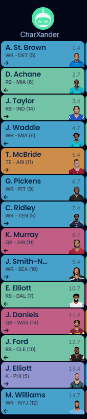
7. PJ -> C
Last Year’s Preseason Ranking: 1 Raw Score: 21.1 Favorite Picks: Rachee Rice / Derrick Henry Least Favorite:
You know what I hate about PJ - he doesn’t set an avatar in apps. Yeah, there are three other guys in the league without avatars, but Steam, Discord and Sleeper!? Set one, you mother fucker.
Wanna know another? OK! His team name is dumb.
Oh wait, Power Rankings… Sorry good sirs.
Even with the slight advantage for winning the league, PJ’s squad ended up closer to the bottom.
I gave him the worst TE ranking, but later saw Hock on the IR… he’s survived early weeks in the psst to be able to make the most of his assets to ensure his late season run is in form.
The WR depth is insane. RB is not, though he could have the best two RBs in the league. (Not Pictured: Allgeier has been added to the team to replace Hockenson)
Apparently NFL execs think Caleb Williams is genrational, but for me, that earned my main the last place ranking for QB.
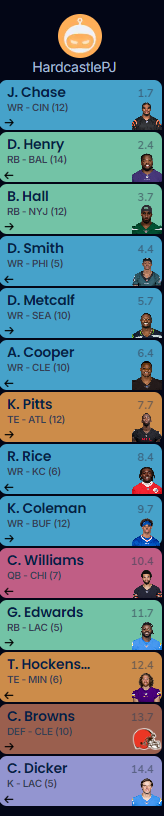
8. Kris -> C
Last Year’s Preseason Ranking: 8 Raw Score: 20.1 Favorite Picks: Ken Walker / D’Andre Swift Least Favorite: Travis Kelce
Kelce is on that LeBron shit, he gonna play in the fourth and when they matter but he’s done as TE1. (Some other good options to hate haha)
This is a really top-heavy team that could fail if Hill and Aiyuk aren’t them.
I do like taking a swing at Reed to stack with Love; none of us know who’s going to be WR1 in GB but that should pay off for whoever gets it right.
I love Walker and Swift, but Jones and Robinson both give me the middle-zeeses. IDK what is going to happen in those situations. I think both are really talented, but in the last two years they haven’t demanded their offense to give it to em.
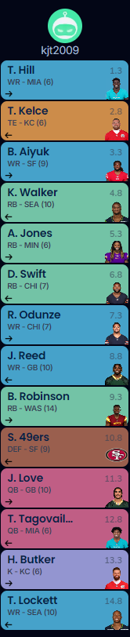
9. Joel -> C
Last Year’s Preseason Ranking: 6 Raw Score: 15.7 Favorite Picks: Brian Thomas Jr. / Evan Engram Least Favorite: Christian Kirk
Prove me wrong, Joel.
Picks I really like: JJ, Pacheco, Cook, Nacua, Mahomes, Engram
After that, I am pretty lukewarm.
I don’t know why he felt the need to backup TE so early, when he didn’t have solid backups for WR or RB.
Big question marks with Kirk, Spears and Corum.
However, if Jacksonville responds, Joel likely has the WR1 there in Kirk or Thomas, so that’s a nice insurance policy.
Josh Palmer is a great roll of the dice at the end… another guy that could be WR1 on his team, so maybe Joel’s algorithm knows what I don’t.
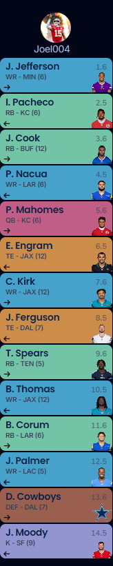
10. Seif -> D
Last Year’s Preseason Ranking: 7 Raw Score: 12.6 Favorite Picks: Dak Prescott / JK Dobbins Least Favorite: Tony Pollard
When I look at this team I see a team that’s higher than last place… My algorithm is fucked.
Seif has the sexiest WR group undeniably. That’s paid off for him in the past. It also accounted for most of Seif’s raw score.
At RB, he’s really relying on some comeback kids: Pollard, Brooks and Dobbins. My problem with that is that that he’s also relying on old RBs, and that historically doesn’t work out.
At the same time.... I can see Mixon grabbing TDs all over the place in that offense that will get into the Red Zone over and over again (with Dell helping). Dobbins is on track for the starting job in LA, and Pollard could be a huge bounce back.
Guessing this #10 spot isn’t going to hold up. Because… I’m an idiot!!
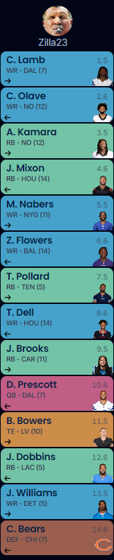
Best of luck to everyone besides Pangy! 🔥
These rankings are written by a fool. Don’t listen to me! ⬇️
“Keep moving forward, don’t listen to the naysayers, persevere, be persistent.” – Rudy
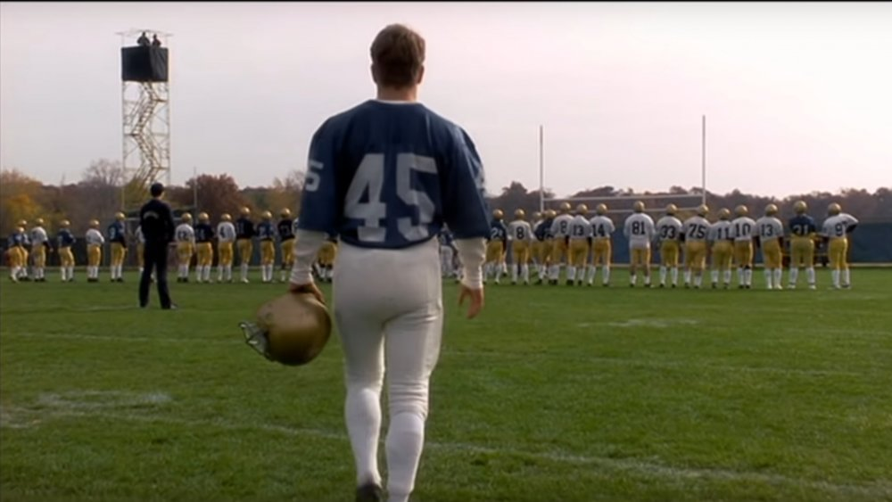